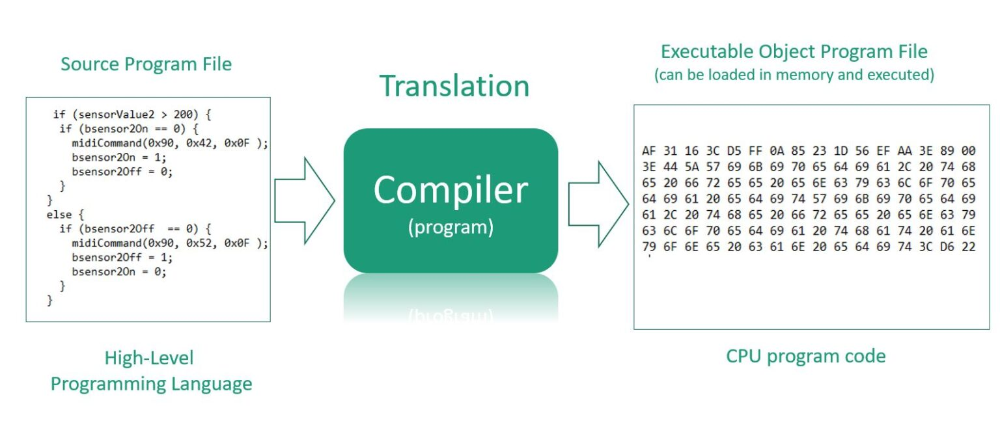

Learn about the basics of C++, a powerful programming language widely used in competitive programming and systems design.
Setting up a C++ compiler is crucial for writing and running your programs efficiently.
Arrays are foundational data structures used to store collections of elements.
Learn about trees, a hierarchical data structure that is widely used in algorithms.
Graphs are used to represent relationships between entities in a network.